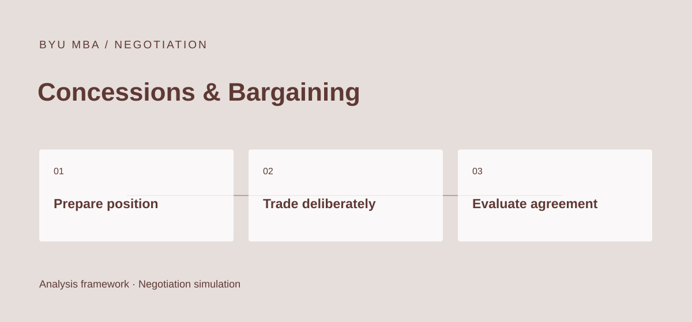

Negotiation simulation · 2026
Concessions & Bargaining: Moms.com
A classroom bargaining exercise followed by peer feedback and a written analysis of my approach. The central issue in my reflection was how to remain cooperative while protecting important terms.
- My role
- Negotiating team member
- Year
- 2026
- Work type
- Negotiation simulation
- Focus
- Bargaining discipline · Reciprocal concessions

My contribution
I participated in the team negotiation and reviewed feedback on how my communication and concessions affected the discussion. My calm approach supported a constructive exchange, while the feedback also showed that our team sometimes moved too readily toward the other side.
Analysis
The reflection distinguished a professional tone from the substance of a concession. Staying composed does not require accepting a less favorable term. A concession should have a purpose and, where appropriate, be linked to something received in return.
Analysis summary
| Decision | Preparation question | Intended benefit |
|---|---|---|
| Opening position | What position can I support? | Establish a clear starting point |
| Concession | What do I receive in return? | Make movement purposeful |
| Acceptance | Does this meet my limits? | Evaluate agreement quality |
Framework summarized from my preparation, analysis, and reflection.
Improved approach
I identified three changes for future negotiations: prepare a clearer starting position, define limits before the discussion, and ask for a reciprocal change when moving on an important term.
What I learned
Negotiation quality depends on the agreement as well as the relationship. A disciplined preparation process helps maintain both.